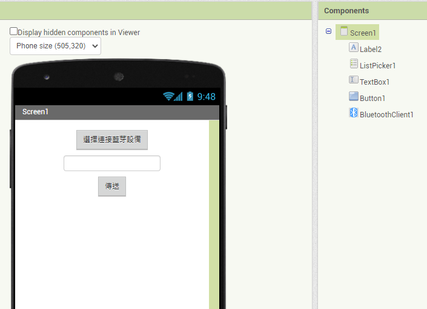
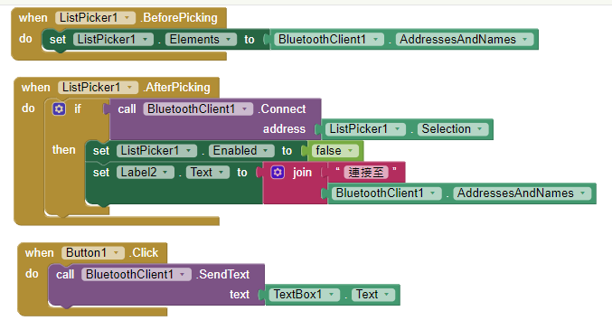
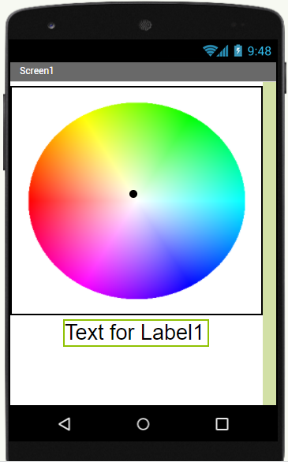
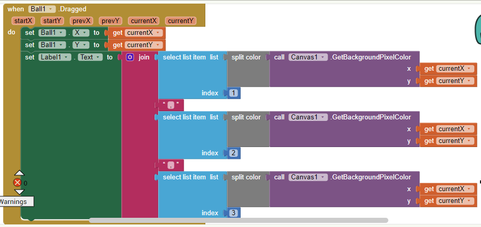
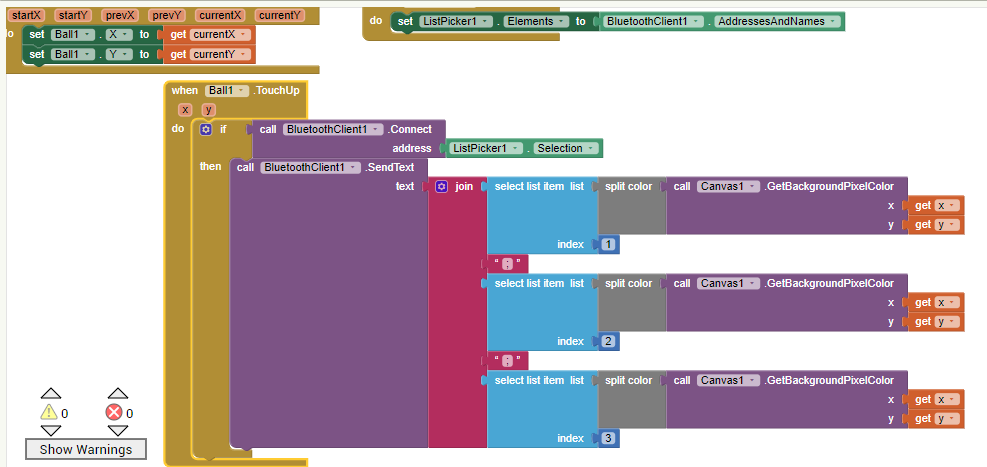

藍芽（Bluetooth）是一種無線通訊技術標準，用來讓固定與行動裝置在短距離間交換資料。藍芽可區分為傳統藍芽與低功耗藍芽。
請開啟Arduino IDE並選擇 檔案-範例-BluethhthSerial-SerialtoSerialBT，開啟後檔案如下：
#include "BluetoothSerial.h"
BluetoothSerial SerialBT; //宣告序列藍芽變數
void setup() {
Serial.begin(115200);
SerialBT.begin("長榮1號"); //請自訂設備名稱
}
void loop() {
if (SerialBT.available()) { //資料從手機端到ESP32
Serial.println(SerialBT.read());
}
delay(20);
}
同學需修改設備名稱。
用於將文字從手機透過序列藍芽傳送至ESP32，之後再將原訊息加上 FromESP32 從ESP32透過藍芽傳送至手機，首先進行手機版面設計。頁面包含 清單選擇器(List Picker)、一個文字方塊用於輸入文字、一個按鈕用於點選傳送。執行程式前，請先配對手機與ESP32藍芽。


在利用序列藍芽控制全彩LED之前，先讓同學熟悉如何在手機設定顏色。頁面包含 一個顏色選取面板、一個移動點及一個顯示現在位置顏色的標籤。設定步驟如下：

接下來設定程式區塊(Blocks)

接下來在上述設計中加入藍芽設定即可傳送選取顏色

最後在Arduino IDE設定下列程式即可
#include "BluetoothSerial.h"
BluetoothSerial SerialBT;
void setup() {
ledcSetup(0,12000,8); //定義3個PWM頻道分別為0,1,2 對應至GPIO接腳 21,16,17控制紅, 綠, 藍
ledcAttachPin(21,0);
ledcSetup(1,12000,8);
ledcAttachPin(16,1);
ledcSetup(2,12000,8);
ledcAttachPin(17,2);
Serial.begin(115200);
SerialBT.begin("長榮1號"); //請自訂設備名稱
Serial.println("藍芽已經開啟!可以開始配對");
}
void loop() {
if (SerialBT.available()) { //資料從手機端到ESP32
String indata=SerialBT.readString(); //讀出藍芽接收資料
int i=indata.indexOf(';'); //將收資料轉成 紅 綠 藍值
int r=indata.substring(0,i).toInt();
int j=indata.indexOf(';',i+1);
int g=indata.substring(i+1,j).toInt();
int b=indata.substring(j+1).toInt();
ledcWrite(0,r); //ˋ將值傳至對應頻道進行設定
ledcWrite(1,g);
ledcWrite(2,b);
}
delay(20);
}
{kind=link}